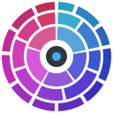
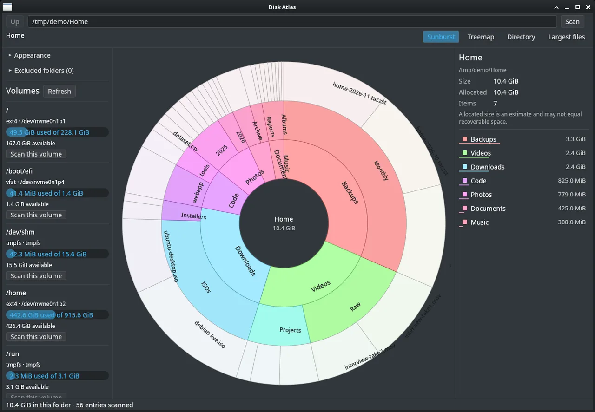
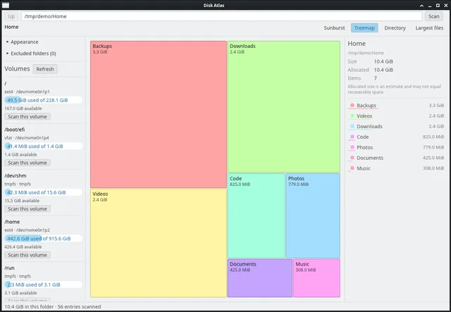
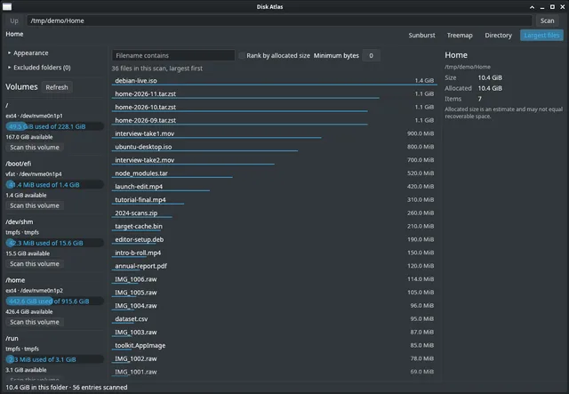

Background scan
A read-only scan with cancellation and a live entry count, so the window stays responsive.

Disk AtlasDisk Atlas scans a folder in the background without changing anything, then shows what takes the space as a sunburst, a treemap or a plain directory list, with a Largest Files view across the whole scan.

Disk Atlas is a free, open source disk usage analyzer for Linux, written in Rust with egui and wgpu. It scans a folder on a background thread without modifying anything and shows where the space went in three views: a three-ring sunburst, a treemap of the current directory and a plain directory list. A Largest Files view ranks regular files across the whole scan with filename search and a minimum-size filter, using either apparent or allocated size. The left panel lists mounted volumes with their capacity and lets you exclude folders from the next scan, and the scanner does not cross into other devices or mount points. Themes include system, light, dark and high contrast, and the app runs on both Wayland and X11. Disk Atlas uses the MIT license and is an early development build: pause and resume, cleanup actions and installable packages are not finished yet.
Updated November 23, 2026
Disk Atlas answers one question well: which folders and files are taking the room. It never deletes or moves anything.
A read-only scan with cancellation and a live entry count, so the window stays responsive.
Three rings colored by angle. Click a folder to open it, a file to select it, or the center to go up.
A treemap of the current folder that shows the immediate children by size.
A virtualized list with sizes. Double-click a folder to enter it. Empty and zero-size entries stay available.
Rank regular files across the whole scan with a filename search and a minimum size, by apparent or allocated size.
The left panel lists volumes with their capacity and lets you exclude folders from the next scan.
System, light, dark and high contrast, a size control and a reduce-motion option, all saved between runs.
Arrow keys move through charts and lists, and an AccessKit tree exposes names and roles to assistive technology.
Switch between sunburst, treemap and directory with one click. Chart colors are the same in every theme.


Disk Atlas is an early build, so it fits people who want to try a new analyzer, not those who need a packaged tool today.
| Tool | Type | Good fit when |
|---|---|---|
| Disk Atlas | Rust desktop app (egui and wgpu) | You want sunburst, treemap and largest-files views in one read-only scan. Early build, run from source, no cleanup actions yet. |
| Filelight | KDE desktop app | You use KDE and want concentric ring charts from a packaged app. |
| Disk Usage Analyzer (Baobab) | GNOME desktop app | You use GNOME and want ring and treemap charts that are already installed. |
| ncdu | Terminal program | You work over SSH and want a fast, text-only directory list. |
| Area | Status |
|---|---|
| Linux desktop | Wayland and X11 with working graphics drivers. Desktop interaction has not been verified across KDE, GNOME, Wayland and X11. |
| Scanning | Does not cross into other devices or mount points, and follows a symlink only when it is the scan root. Extra hard links add 0 bytes. |
| Btrfs | Shows a warning that snapshots, shared data and compression make sizes approximate. It does not enter nested subvolumes. |
| Packaging | Not in a package repository yet. Build from source with Rust 1.96 or newer, or build a .deb with the script in the repository. |
Disk Atlas is an early development build. You need Rust 1.96 or newer and a Linux desktop with working graphics drivers.
sudo apt install git build-essential
git clone https://github.com/mikeholp87/disk-atlas
cd disk-atlascargo run --release -p diskatlasEnter a folder and choose Scan. Pass a folder, for example diskatlas ~/Downloads, to start scanning at once.
packaging/build-deb.sh
sudo apt install ./target/deb/diskatlas_*.debInstalls the binary, desktop entry, icon, AppStream metadata and the man diskatlas page. The package needs the glibc of the machine it was built on.
Disk Atlas only reads metadata. There are no cleanup, delete or move actions.
Allocated size includes directory metadata and may count shared storage more than once. It is not a recoverable-space estimate.
The scanner never descends into another device or into any mount point listed in /proc/self/mountinfo.
No. It only reads metadata. Cleanup actions are not built, so use your file manager once you know what to remove.
Apparent size is the length of a file. Allocated size is what the filesystem reserves for it, which can be larger or, for sparse files, smaller.
The scanner does not cross into other devices or mount points, so a mount inside your scan appears as an empty leaf. Scan that drive directly.
In settings.conf under $XDG_CONFIG_HOME/diskatlas, which is ~/.config/diskatlas by default.
Open an issue on GitHub.